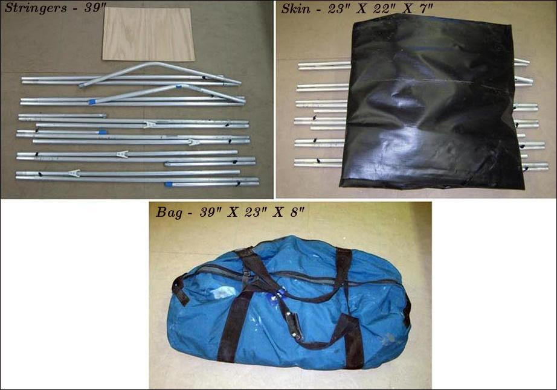

| Sonnet 16 - (Folded) | Menu Previous Page Next Page |
|

The frame utilizes 3ea x 3/4" aluminum stringers ( keel and 2 side stringers) broken down into 39" sections (including inserts). 1/8" shock cords are used to keep the stringer sections together when disassembled. During assembly, 5/8" X 6" inserts connect the individual tubes and 7/8" X 6" sleeves connect the fore and aft stringers at the center of the boat. In addition to shock cords and insert tubes, the keel uses "spring pins". The spring pins keep the shaped stems from falling over when being inserted under the deck skin. The spring pin setup is described later in this section.
|
|